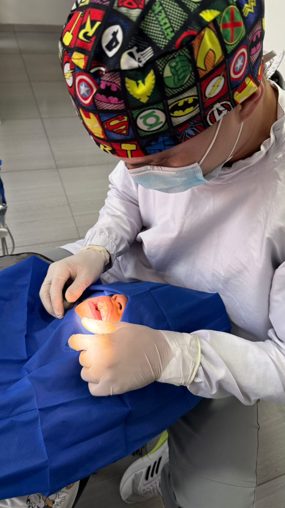

Expertos en bienestar gingival y estructuras periodontales. Atendemos inflamación e infección de encías y colocamos implantes usando metodologías vanguardistas.

Contamos con un periodoncista experto en el cuidado de encías, implantes dentales y tratamientos periodontales de última generación.
Identificación e intervención experta para afecciones de las encías y restauración mediante implantología.
Procedimiento sin intervención quirúrgica para remover depósitos minerales y agentes patógenos bajo las encías. Óptimo para inflamación gingival y enfermedad periodontal incipiente.
Más InformaciónProtección de superficies radiculares visibles ocasionadas por retracción gingival. Restablece apariencia y disminuye molestia mediante procedimientos poco agresivos.
Más InformaciónInserción mediante intervención quirúrgica de estructuras de titanio destinadas a reemplazar ausencias dentarias. Alternativa duradera que preserva la estructura ósea.
Más InformaciónRestitución de volumen óseo comprometido por afecciones periodontales o extirpaciones dentarias. Procedimiento que prepara la zona para implantes posteriores.
Más InformaciónModificación cosmética y operacional de la estructura gingival. Ajuste de exhibición excesiva de encías o tejido aumentado para embellecimiento de tu expresión.
Más InformaciónNuestro consultorio está ubicado estratégicamente en Santa Mónica Popular para atender a los siguientes sectores:
¿Sangrado de encías o movilidad dental? No esperes más, agenda tu evaluación periodontal.
Ocho de cada diez adultos presentan afecciones periodontales sin tener conciencia. Solicita un examen con nuestra especialista en periodoncia. La detección a tiempo preserva tus piezas dentarias.
Evaluación PeriodontalUbicándonos sin complicación en la zona meridional de Cali, barrio Santa Mónica Popular. Contamos con espacios de estacionamiento.